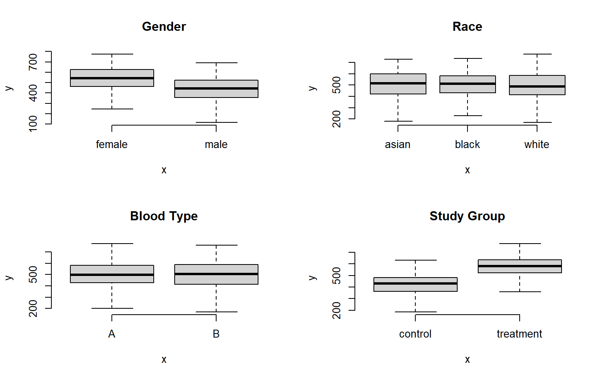
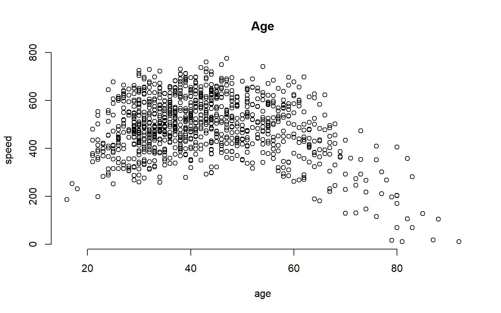
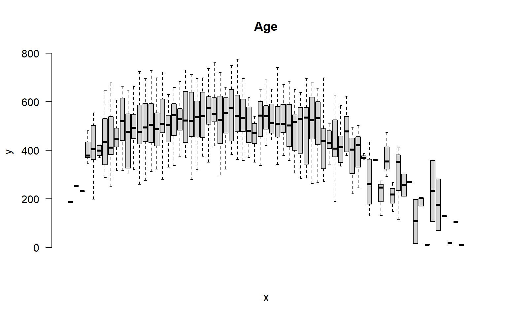

library( pander )
library( dplyr )
library( tidyr )
library( reshape2 )
library( scales )
library( ggplot2 )
library( Lahman )20 Efficient Use of Group Structure
20.1 Packages Used in this Chapter
20.2 Hypothetical Experimental Data
We will demonstrate some functions using this hypothetical dataset:
head( d ) %>% pander| id | race | blood.type | gender | age | study.group | speed |
|---|---|---|---|---|---|---|
| 1 | white | B | male | 37 | treatment | 470.9 |
| 2 | black | A | male | 52 | treatment | 540 |
| 3 | white | A | female | 49 | treatment | 615.2 |
| 4 | black | B | female | 45 | treatment | 570.2 |
| 5 | asian | B | female | 45 | treatment | 635.1 |
| 6 | white | B | female | 55 | treatment | 588.9 |
20.3 Group Structure
The two most important skills as you first learn a data programming language are:
- Translating English phrases into computer code using logical statements
- Organizing your data into groups
This lecture focuses on efficiently splitting your data into groups, and then analyzing your data by group.
20.3.1 What Are Groups?
A group represents a set of elements with identical characteristics - mice all belong to one group and elephants belong to another. Easy enough, right?
In data analysis, it is a little more complicated because a group is defined by a set of features. Each group still represents a set of elements with identical characteristics, but when we have multiple features there is a unique group for each combination of features.
The simple way to think about this is that the cross-tab of features generates a grid (table), and each cell represents a unique group:

We might be interested in simple groups (treatment cases versus control cases) or complex groups (does the treatment effect women and men differently?).
In previous lectures you have learned to identify a group with a logical statement and analyze that group discretely.
mean( speed[ study.group == "treatment" & gender=="female" ] )[1] 611.6984In this lecture you will learn to define a group structure, then analyze all of your data using that structure.
tapply( speed, INDEX = list( study.group, gender ), FUN = mean )| female | male | |
|---|---|---|
| control | 460.2 | 350.9 |
| treatment | 611.7 | 518.8 |
20.3.2 Main Take-Away
R has been designed to do efficient data analysis by defining a group structure, then quickly applying a function to all unique members.

The base R packages do this with a set of functions in the apply() family. The tapply() function allows you to specify an outcome to analyze and a group, then ask for results from a function.
tapply( X=speed, INDEX=list( study.group, gender ), FUN=mean ) | female | male | |
|---|---|---|
| control | 460.2 | 350.9 |
| treatment | 611.7 | 518.8 |
The dplyr package makes this process easier using some simple verbs and the “pipe” operator.
dat %>% group_by( study.group, gender ) %>% summarize( ave.speed = mean(speed) )| study.group | gender | ave.speed |
|---|---|---|
| control | male | 350.9 |
| control | female | 460.2 |
| treatment | male | 518.8 |
| treatment | female | 611.7 |
20.3.3 Example
Let’s think about a study looking at reading speed. The treatment is a workshop that teaches some speed-reading techniques. In this study we have data on:
- gender (male, female)
- race (black, white, asian)
- blood.type (A, B)
- age (from 18 to 93)
Examining descriptive statistics we can see that reading speed varies by gender and the treatment group, but not by race or blood type:

The question is, how many unique groups can we create with these four factors?
Each individual factor contains a small number of levels (only 2 or 3 in this case), which makes the group structure look deceptively simple at first glance. When we start to examine combinations of factors we see that group structure can get complicated pretty quickly.
If we look at gender alone, we have two levels: male and female. So we have two groups. If we look at our study groups alone we have two groups: treatment and control.
If we look at gender and the study groups together, we now have a 2 x 2 grid, or four unique groups.
If the race factor has three levels, how many unique groups will we have considering the study design, gender, and race together?

We can calculate the size of the grid by multiplying number of levels for each factor. We see here we have 12 unique groups:
nlevels( gender ) * nlevels( study.group ) * nlevels( race )[1] 12If we add blood type, a factor with two levels (A and B), we now have 24 unique groups:
p + facet_grid( race + study.group ~ gender + blood.type) 
What about age? It is a continuous variable, so it’s a little more tricky.
We can certainly analyze the relationship between age and speed using correlation tools.
plot( age, speed, bty="n", main="Age" )
But we can also incorporate this independent variable into a group structure. We can treat each distinct age as a separate group. The ages in this study range from 18 to 93, so we have 65 distinct ages represented.
plot( factor(age), speed, las=2, frame.plot=F, outline=F, main="Age", xaxt="n" )
If we think about the overall group structure, then, we have unique groups defined by gender, race, blood type, and study design, and another 65 age groups. So in total we now have 24 x 65 = 1,560 groups! That is getting complicated.
This group design is problematic for two reasons. From a pragmatic standpoint, we can’t report results from 1,500 groups in a table. From a more substantive perspective, although we have 1,500 distinct cells in our grid, many may not include observations that represent the unique combination of all factors. So this group design is not very practical.
A similar problem arises if our data includes time. If our data includes the time of events recorded by hours, days of the week, months, and years, we can have complicated group structures if we try to analyze every unique combination.
We can simplify our analysis by thinking about age ranges instead of ages, or in other words by binning our continuous data. If we split it into five-year ranges, for example, we have gone from 65 distinct ages to 12 distinct age groups.
age.group <- cut( age,
breaks=seq(from=20,to=80,by=5),
labels=paste( seq(from=20,to=75,by=5),
"to", seq(from=25,to=80,by=5) ) )
group.structure <- formula( speed ~ age.group )
boxplot( group.structure, las=2, frame.plot=F, outline=F, main="Age Group" )
We have now simplified our analysis from 1,560 to 288 possible groups. Combinations of groups will also be easier:
group.structure <- formula( speed ~ gender * age.group )
boxplot( group.structure,
las=2, frame.plot=F, outline=F, main="Age Group by Gender",
col=c("firebrick","steelblue"), xaxt="n" )
20.4 Analysis by Group
Let’s demonstrate some analysis of groups using the Lahman package and some dplyr verbs. Let’s do some analysis of player salaries (Salaries dataset), and start with a simple group structure - teams in the National League and time.
- Which team has the highest average player salary?
- Which team has the most players paid over $5 million a season?
- Which team has raised it’s pay the most over the past decade?
Let’s start by thinking about group structure. We have teams, and we have seasons. Teams is stored as a factor, and seasons as a numeric value, so we can consider group for each by counting levels and unique values:
nlevels( Salaries$teamID )[1] 35length( unique( Salaries$yearID ) )[1] 32So we can potentially calculate 32 x 46 = 1,472 average player salaries.
20.4.1 Highest Average Player Salary
For our first question, we will select only teams from the National League. Let’s use the most recent year of data to calculate average pay.
Salaries %>% filter( lgID == "NL", yearID == 2016 ) %>%
group_by( teamID) %>%
summarize( Ave_Salary = mean(salary) )# A tibble: 15 × 2
teamID Ave_Salary
<fct> <dbl>
1 ARI 3363041.
2 ATL 2362010.
3 CHN 5312678.
4 CIN 3066899.
5 COL 3413487
6 LAN 6322525.
7 MIA 2761222.
8 MIL 2292508.
9 NYN 4958857.
10 PHI 2033793.
11 PIT 3706387.
12 SDN 3756475.
13 SFN 6890151.
14 SLN 4614629.
15 WAS 5448179.Since the salaries are large, they are a little hard to read. Let’s clean up the table a bit.
Salaries %>%
filter( lgID == "NL", yearID == 2016 ) %>%
group_by( teamID ) %>%
summarize( Ave_Salary=dollar( mean(salary,na.rm=T) ) ) %>%
arrange( desc(Ave_Salary) ) %>%
pander()| teamID | Ave_Salary |
|---|---|
| SFN | $6,890,151 |
| LAN | $6,322,525 |
| WAS | $5,448,179 |
| CHN | $5,312,678 |
| NYN | $4,958,857 |
| SLN | $4,614,629 |
| SDN | $3,756,475 |
| PIT | $3,706,387 |
| COL | $3,413,487 |
| ARI | $3,363,041 |
| CIN | $3,066,899 |
| MIA | $2,761,222 |
| ATL | $2,362,010 |
| MIL | $2,292,508 |
| PHI | $2,033,793 |
20.4.2 Most Players Paid Over $5 Million
This question requires you to utilize a logical statement in order to translate from the question to code. We need to inspect each salary, determine whether it is over the $5m threshold, then count all of the cases. The operation will look something like this:
sum( Salaries$salary > 5000000 )[1] 3175It gets a little trickier when we want to do the operation simultaneously across groups. Our team group structure is already defined, so let’s define our logical vector and count cases that match:
dat.NL <- filter( Salaries, yearID == 2010 & lgID == "NL" ) %>% droplevels()
gt.5m <- dat.NL$salary > 5000000
table( dat.NL$teamID, gt.5m ) gt.5m
FALSE TRUE
ARI 23 3
ATL 21 6
CHN 19 8
CIN 21 5
COL 23 6
FLO 23 4
HOU 24 4
LAN 20 7
MIL 25 4
NYN 19 9
PHI 18 10
PIT 27 0
SDN 25 1
SFN 21 7
SLN 19 6
WAS 26 4This solution works, but the table provides too much information. We can use dplyr to simplify and format the table nicely for our report:
Salaries %>%
filter( yearID == 2010 & lgID == "NL" ) %>%
group_by( teamID ) %>%
summarise( gt_five_million = sum( salary > 5000000 ) ) %>%
arrange( desc(gt_five_million) ) %>%
pander| teamID | gt_five_million |
|---|---|
| PHI | 10 |
| NYN | 9 |
| CHN | 8 |
| LAN | 7 |
| SFN | 7 |
| ATL | 6 |
| COL | 6 |
| SLN | 6 |
| CIN | 5 |
| FLO | 4 |
| HOU | 4 |
| MIL | 4 |
| WAS | 4 |
| ARI | 3 |
| SDN | 1 |
| PIT | 0 |
20.4.3 Fielding Positions
Which fielding position is the highest paid?
merge( Salaries, Fielding ) %>%
filter( yearID == 2016 ) %>%
group_by( POS ) %>%
summarize( Mean_Salary = dollar( mean(salary) ) ) %>%
pander| POS | Mean_Salary |
|---|---|
| 1B | $5,680,014 |
| 2B | $3,092,188 |
| 3B | $3,812,355 |
| C | $3,167,962 |
| OF | $4,317,165 |
| P | $4,002,667 |
| SS | $2,574,626 |
20.4.4 Country of Birth
Which country has produced the highest paid baseball players?
merge( Salaries, People ) %>%
filter( yearID == 2016 ) %>%
group_by( birthCountry ) %>%
summarize( Mean_Salary = dollar( mean(salary) ) ) %>%
pander| birthCountry | Mean_Salary |
|---|---|
| Aruba | $650,000 |
| Australia | $523,400 |
| Brazil | $1,548,792 |
| CAN | $7,854,167 |
| Colombia | $3,125,289 |
| Cuba | $5,787,593 |
| Curacao | $5,724,167 |
| D.R. | $5,045,623 |
| Germany | $511,500 |
| Japan | $8,247,012 |
| Mexico | $5,333,671 |
| Netherlands | $2,425,000 |
| Nicaragua | $2,375,000 |
| P.R. | $3,241,378 |
| Panama | $2,946,550 |
| Saudi Arabia | $522,500 |
| South Korea | $5,326,190 |
| Taiwan | $6,750,000 |
| USA | $4,222,249 |
| V.I. | $507,500 |
| Venezuela | $4,521,051 |
20.4.5 Pay Raises
To examine pay raises, we will now use more than one year of data. Since the question asks about pay raises over the past decade, we will filter the last ten years of data.
And since we are looking at patterns over teams and over time, we need to define a group structure with two variables:
Salaries %>% filter( yearID > 2006 & lgID == "NL" ) %>%
group_by( teamID, yearID ) %>%
summarize( mean= dollar(mean(salary)) ) %>%
head( 20 ) %>% pander| teamID | yearID | mean |
|---|---|---|
| ARI | 2007 | $1,859,555 |
| ARI | 2008 | $2,364,383 |
| ARI | 2009 | $2,812,141 |
| ARI | 2010 | $2,335,314 |
| ARI | 2011 | $1,986,660 |
| ARI | 2012 | $2,733,512 |
| ARI | 2013 | $3,004,400 |
| ARI | 2014 | $3,763,904 |
| ARI | 2015 | $2,132,207 |
| ARI | 2016 | $3,363,041 |
| ATL | 2007 | $3,117,530 |
| ATL | 2008 | $3,412,189 |
| ATL | 2009 | $3,335,385 |
| ATL | 2010 | $3,126,802 |
| ATL | 2011 | $3,346,257 |
| ATL | 2012 | $2,856,205 |
| ATL | 2013 | $3,254,501 |
| ATL | 2014 | $4,067,042 |
| ATL | 2015 | $2,990,885 |
| ATL | 2016 | $2,362,010 |
This might seem like an odd format. We might expect something that looks more like our grid structure:
dat.NL <- filter( Salaries, yearID > 2010 & lgID == "NL" ) %>% droplevels()
tapply( dat.NL$salary,
INDEX=list(dat.NL$teamID, dat.NL$yearID),
FUN=mean, na.rm=T ) %>% pander()| 2011 | 2012 | 2013 | 2014 | 2015 | 2016 | |
|---|---|---|---|---|---|---|
| ARI | 1986660 | 2733512 | 3004400 | 3763904 | 2132207 | 3363041 |
| ATL | 3346257 | 2856205 | 3254501 | 4067042 | 2990885 | 2362010 |
| CHN | 5001893 | 3392194 | 3867989 | 2426759 | 4138547 | 5312678 |
| CIN | 2531571 | 2935843 | 4256178 | 3864911 | 4187862 | 3066899 |
| COL | 3390310 | 2692054 | 2976363 | 3180117 | 3827544 | 3413487 |
| FLO | 2190154 | NA | NA | NA | NA | NA |
| HOU | 2437724 | 2332731 | NA | NA | NA | NA |
| LAN | 3472967 | 3171453 | 6980069 | 6781706 | 7441103 | 6322525 |
| MIA | NA | 4373259 | 1400079 | 1549515 | 2835688 | 2761222 |
| MIL | 2849911 | 3755921 | 3077881 | 3748778 | 3477586 | 2292508 |
| NYN | 4401752 | 3457555 | 1648278 | 3168777 | 3870667 | 4958857 |
| PHI | 5765879 | 5817965 | 6533200 | 5654530 | 4295885 | 2033793 |
| PIT | 1553345 | 2248286 | 2752214 | 2756357 | 3065259 | 3706387 |
| SDN | 1479650 | 1973025 | 2342339 | 2703061 | 4555435 | 3756475 |
| SFN | 4377716 | 3920689 | 5006441 | 5839649 | 6100056 | 6890151 |
| SLN | 3904947 | 3939317 | 3295004 | 4310464 | 4586212 | 4614629 |
| WAS | 2201963 | 2695171 | 4548131 | 4399456 | 5365085 | 5448179 |
Later on we will look at the benefits of “tidy data”, but the basic idea is that you can “facet” your analysis easily when your groups are represented as factors instead of arranged as a table. For example, here is a time series graph that is faceted by teams:
Salaries %>% filter( yearID > 2000 & lgID == "AL" ) %>%
group_by( teamID, yearID ) %>%
summarize( Mean_Player_Salary=mean(salary) ) -> t1
qplot( data=t1, x=yearID, y=Mean_Player_Salary,
geom=c("point", "smooth") ) +
facet_wrap( ~ teamID, ncol=5 )
Now you can quickly see that Detroit is the team that has raised salaries most aggressively.
If we need to, we can easily convert a tidy dataset into something that looks like a table using the spread() function:
Salaries %>% filter( yearID > 2006 & lgID == "NL" ) %>%
group_by( teamID, yearID ) %>%
summarize( mean = dollar(mean(salary)) ) %>%
spread( key=yearID, value=mean, sep="_" ) %>%
select( 1:6 ) %>% na.omit() %>%
pander| teamID | yearID_2007 | yearID_2008 | yearID_2009 | yearID_2010 | yearID_2011 |
|---|---|---|---|---|---|
| ARI | $1,859,555 | $2,364,383 | $2,812,141 | $2,335,314 | $1,986,660 |
| ATL | $3,117,530 | $3,412,189 | $3,335,385 | $3,126,802 | $3,346,257 |
| CHN | $3,691,494 | $4,383,179 | $5,392,360 | $5,429,963 | $5,001,893 |
| CIN | $2,210,483 | $2,647,061 | $3,198,196 | $2,760,059 | $2,531,571 |
| COL | $2,078,500 | $2,640,596 | $2,785,222 | $2,904,379 | $3,390,310 |
| FLO | $984,097 | $660,955 | $1,315,500 | $2,112,212 | $2,190,154 |
| HOU | $3,250,333 | $3,293,719 | $3,814,682 | $3,298,411 | $2,437,724 |
| LAN | $3,739,811 | $4,089,260 | $4,016,584 | $3,531,778 | $3,472,967 |
| MIL | $2,629,130 | $2,790,948 | $3,083,942 | $2,796,837 | $2,849,911 |
| NYN | $3,841,055 | $4,593,113 | $5,334,785 | $4,800,819 | $4,401,752 |
| PHI | $2,980,940 | $3,495,710 | $4,185,335 | $5,068,871 | $5,765,879 |
| PIT | $1,427,327 | $1,872,684 | $1,872,808 | $1,294,185 | $1,553,345 |
| SDN | $2,235,022 | $2,376,697 | $1,604,952 | $1,453,819 | $1,479,650 |
| SFN | $3,469,964 | $2,641,190 | $2,965,230 | $3,522,905 | $4,377,716 |
| SLN | $3,224,529 | $3,018,923 | $3,278,830 | $3,741,630 | $3,904,947 |
| WAS | $1,319,554 | $1,895,207 | $2,140,286 | $2,046,667 | $2,201,963 |
Salaries %>% filter( yearID > 2006 & lgID == "NL" ) %>%
group_by( teamID, yearID ) %>%
summarize( mean = dollar(mean(salary)) ) %>%
spread( key=teamID, value=mean, sep="_" ) %>%
select( 1:6 ) %>%
pander| yearID | teamID_ARI | teamID_ATL | teamID_CHN | teamID_CIN | teamID_COL |
|---|---|---|---|---|---|
| 2007 | $1,859,555 | $3,117,530 | $3,691,494 | $2,210,483 | $2,078,500 |
| 2008 | $2,364,383 | $3,412,189 | $4,383,179 | $2,647,061 | $2,640,596 |
| 2009 | $2,812,141 | $3,335,385 | $5,392,360 | $3,198,196 | $2,785,222 |
| 2010 | $2,335,314 | $3,126,802 | $5,429,963 | $2,760,059 | $2,904,379 |
| 2011 | $1,986,660 | $3,346,257 | $5,001,893 | $2,531,571 | $3,390,310 |
| 2012 | $2,733,512 | $2,856,205 | $3,392,194 | $2,935,843 | $2,692,054 |
| 2013 | $3,004,400 | $3,254,501 | $3,867,989 | $4,256,178 | $2,976,363 |
| 2014 | $3,763,904 | $4,067,042 | $2,426,759 | $3,864,911 | $3,180,117 |
| 2015 | $2,132,207 | $2,990,885 | $4,138,547 | $4,187,862 | $3,827,544 |
| 2016 | $3,363,041 | $2,362,010 | $5,312,678 | $3,066,899 | $3,413,487 |